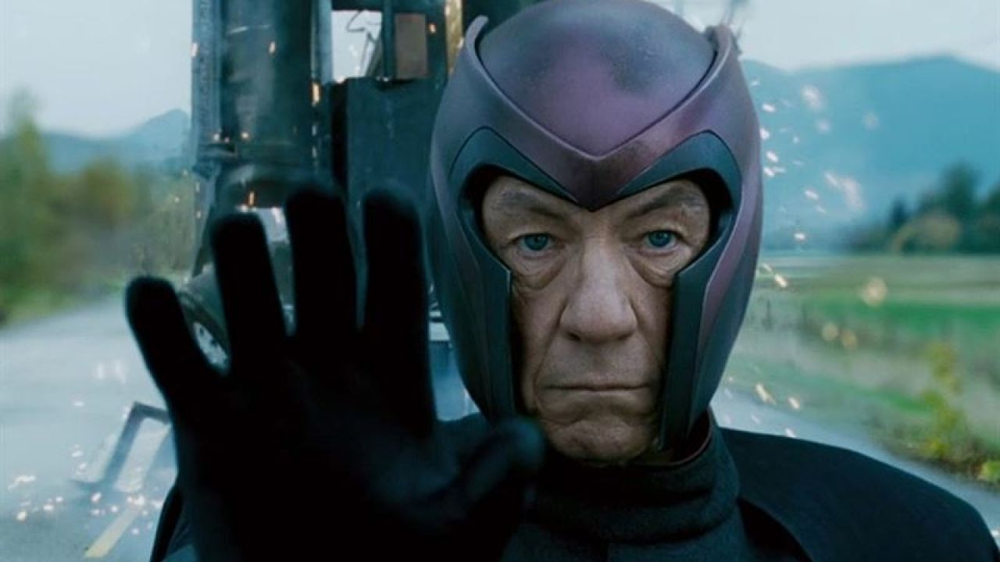

☰
INSTITUTO TECNICO INDUSTRIAL NACIONAL
El ITIN es una institucion que forma integralmente a niños, niñas y jovenes con una oferta educativa formal: academica, tecnica y tecnica profesional en las diferentes especialidades, con criterios de pertenencia y calidad que les permite ser competentes, acorde con los avances tecnicos y tecnologicos, con una perspectiva de desarrollo sostenible, de respeto y defensa de la vida, el territorio y la biodiversidad
Director
CO-Director 
Coordinador
Profesor

Estudiante estrella

Estudiante decepcion
DESARROLLADORES:
Juan Jose Marin